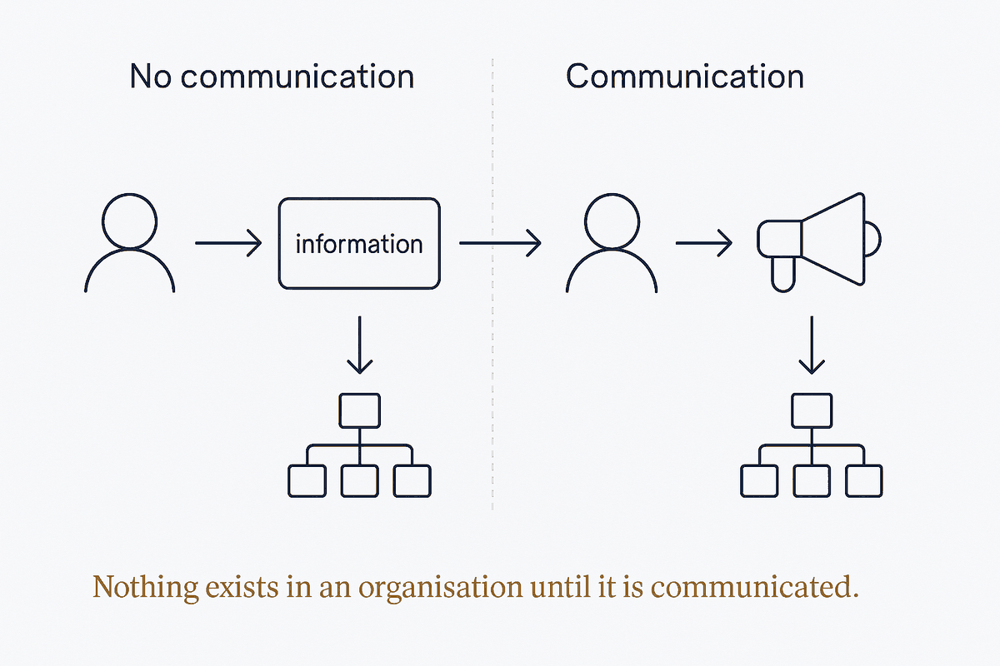

Nothing exists in an organisation until it is communicated — a model, a decision or an insight has no effect until it lands with someone.

Nothing exists in an organisation until it is communicated. A model that nobody understands does not constrain anything. A decision that was never landed gets relitigated. An insight held by one person is, organisationally, an insight that has not happened yet.
This sounds like a soft skill and is not. It is a claim about where value actually lives: not in the artifact, but in the shared understanding the artifact produces. Two teams with the same model and different understandings of it do not have the same model.
It also means the outcome is the responsibility of the sender. If the message did not land, it was not communicated — regardless of how correct, complete or well-structured it was. "I explained it, they didn't listen" is a description of a failure, not an excuse for one.
Technical people resist this, reasonably: it feels like being asked to compensate for other people's inattention. But the alternative is worse. Every correct model that nobody adopted, every architecture decision quietly ignored, every documented standard everyone works around — all of these were, at some point, technically successful and communicatively failed. The work was done. It just did not exist.
The strong version of the claim: words are not just reports about reality, they are moves that change it. "The model is a mess" describes a situation and leaves it intact. "The model will be readable by anyone who needs it, by March" brings something into existence that did not exist a second earlier — a commitment other people can now rely on, plan around, and hold you to.
Most professional speech is descriptive by default: assessments, complaints, status. Descriptions are useful and change nothing. The generative moves are narrower and rarer — a request, a promise, a declaration, an agreement — and they are the ones that actually alter what happens next. A model, seen this way, is a declaration about how an organisation will treat its own concepts, which is why it can meet resistance that no mere description would provoke.
People rarely listen to what was said. They listen through what they already believe — past experience, an existing opinion, an assumption about the speaker — and hear a version filtered to fit. This is why the same architecture proposal is heard as "sensible" by one person and "empire-building" by another, with no difference in the words.
The practical consequence for anyone presenting a model: the filter is part of the audience. A team burned by a failed migration hears risk in every proposal, however carefully phrased. That is not obstruction, it is the past setting the boundaries of what feels possible — and it must be addressed directly rather than argued past.
Everything above used to be about people. It now also applies to machines. A model an AI cannot parse is a model that does not exist to it; structure that lives only in someone's head cannot be reasoned over. Communicating to the machine is the same discipline — say it explicitly, in a form the reader can actually use — which is why plain text, open formats and generated artifacts are not a technical preference but a communication stance.
Not "did I explain this?" but "what changed as a result?" If nothing moved — no decision, no behaviour, no shared language — the communication has not happened yet, however many times the words were said.